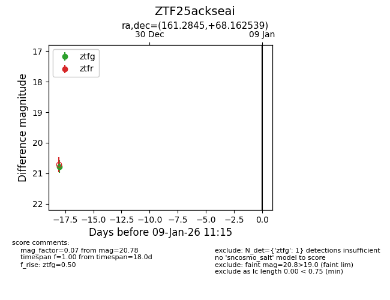
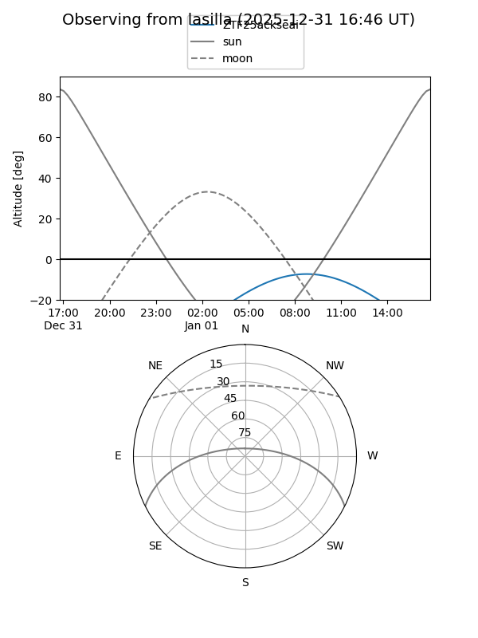
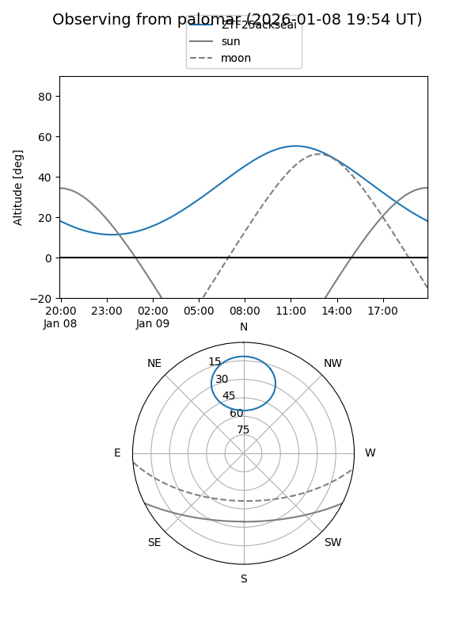

ZTF25ackseai
Target ZTF25ackseai at 2025-12-22 20:38
Aliases and brokers:
FINK: fink-portal.org/ZTF25ackseai
Lasair: lasair-ztf.lsst.ac.uk/objects/ZTF25ackseai
ALeRCE: alerce.online/object/ZTF25ackseai
alt names
ZTF25ackseai (ztf,fink_ztf)
Coordinates:
equatorial (ra, dec) = 161.2845,+68.16254
equatorial (HMS+DMS) = 10:45:08.27,+68:09:45.14
galactic (l, b) = (138.8791,+44.85429)
Flags:
Photometry:
last ztfg=20.78
1 ztfg detections
Lightcurve

Visibility


Additional plots